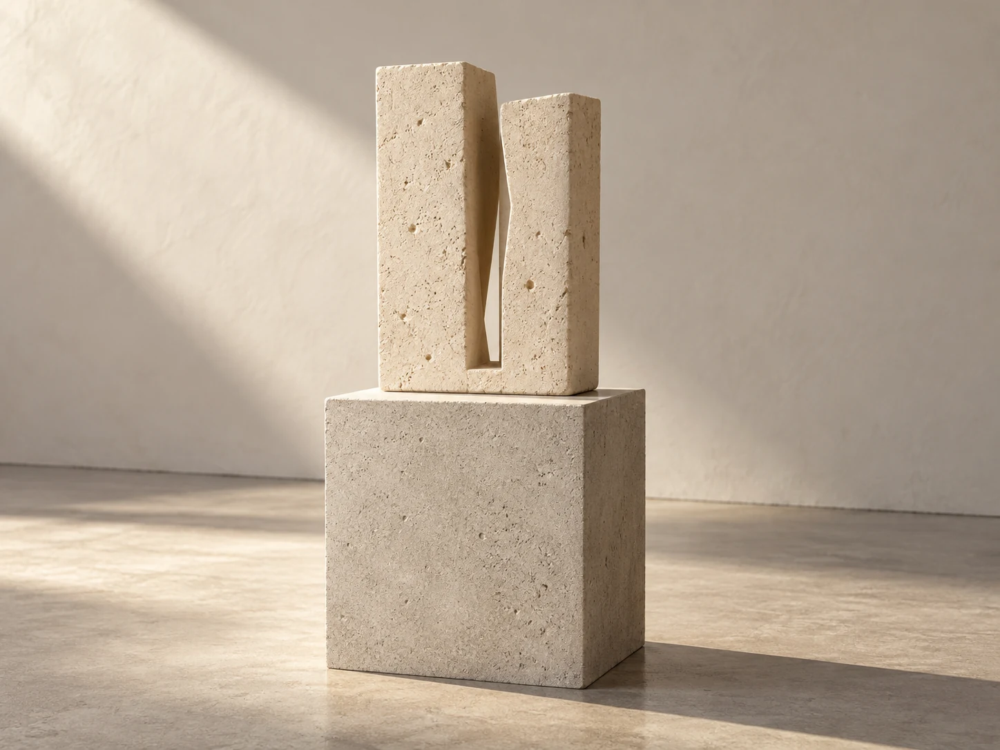
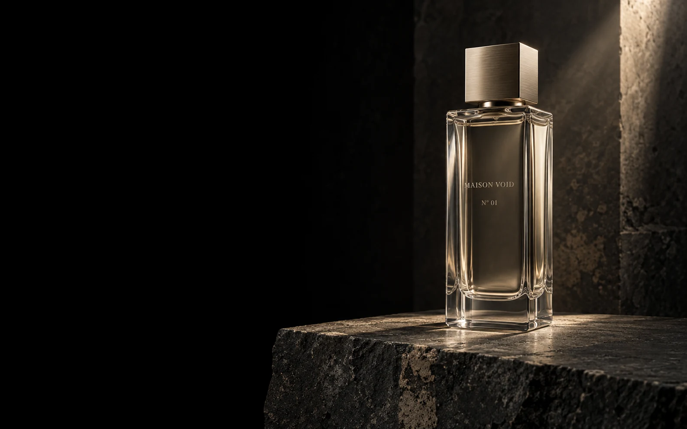

DISCOVERN° 02 — SCULPTURELIMESTONE
Interval
光と影のあいだに、余白を置く。

帰宅して、灯りをひとつ落とす。肌に残る香りが、外の時間と自分の時間の境目になる。L’Absenceは、そんなひとりの時間のために考えた香水です。
A scent that stays close.
N° 01 / FRAGRANCE
ベルガモットの明るさから、アイリスの柔らかさへ。最後に残るシダーウッドとムスクが、肌の近くで静かに続きます。
Bergamot / Violet leaf
Iris / White tea
Cedarwood / Soft musk
直射日光と高温を避けて保管してください。
厚い底に光をためる、透明なガラス。金属のキャップに触れるときの重みまで、ひとつの造形として。
このブラウザではバッグを保存できません。このページを開いている間だけ保持します。